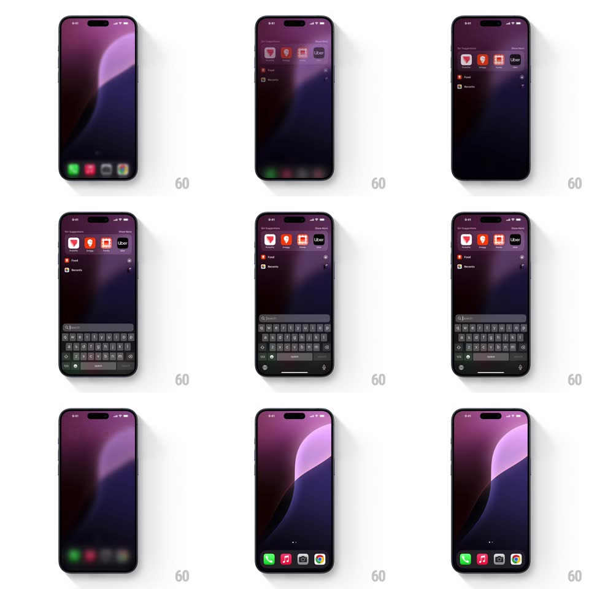

Media
Frame-by-frame

Rebuild this interaction 1:1: iOS pull-down for Spotlight - dragging down on the home screen blurs and dims the wallpaper and icons, slides the app grid down with the finger, and reveals the Spotlight search field, Siri Suggestions row, and the keyboard rising from the bottom.

Rebuild this interaction 1:1: iOS pull-down for Spotlight - dragging down on the home screen blurs and dims the wallpaper and icons, slides the app grid down with the finger, and reveals the Spotlight search field, Siri Suggestions row, and the keyboard rising from the bottom. ## Integration Integration: stack-agnostic spec - springs given as stiffness/damping, timed motions as duration + curve; map every value to your framework and animation library of choice. ## Scene iOS home screen (purple wave wallpaper, dock with Phone/Music/Camera/Chrome). Spotlight state: blurred wallpaper backdrop, "Siri Suggestions" app row, a "Food" suggestion section, "Recents" list, search field with blinking cursor above a fully raised keyboard. ## Motion spec Pattern: gesture-driven reveal with progressive blur. - Pull down: the home-screen content translates down 1:1 with the finger while a gaussian blur and ~30% dim ramp in proportionally (blur 0 -> 25px across the full gesture travel). - Spotlight chrome (suggestions row, recents) fades in staggered top-to-bottom (opacity 0 -> 1, ~200ms each, 60ms stagger) once travel passes ~30%. - The search field slides down from the top edge into its resting position, tracking the gesture; the keyboard rises from the bottom, tracking with slight lag (~15% behind the finger). - Release past ~50% completes to full Spotlight (spring ~300/28, ~320ms) and focuses the field; before 50% everything springs back to the home screen, blur easing to 0. ## Calibration - Blur is proportional to travel, never a binary switch - mid-gesture states show half-blurred content. - The keyboard tracks the gesture with a small lag; it must not pop in after the fact. ## Reduced motion Crossfade to the Spotlight state (200ms) on a short pull; keyboard appears without tracking. ## Don't miss - The dock icons blur together with the wallpaper and grid - nothing stays sharp. - Page dots remain visible under the blur through most of the transition.